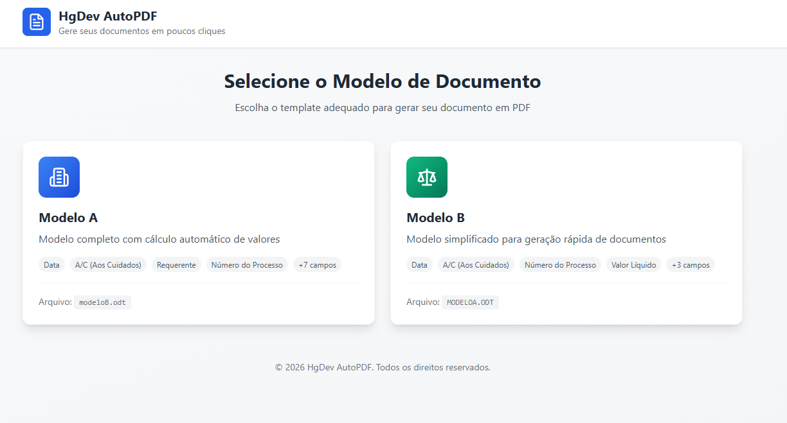
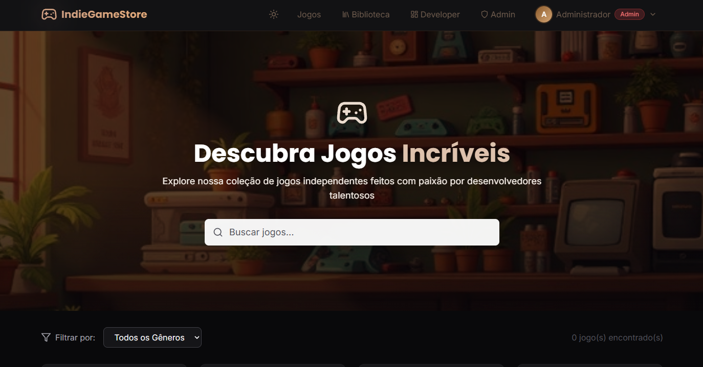
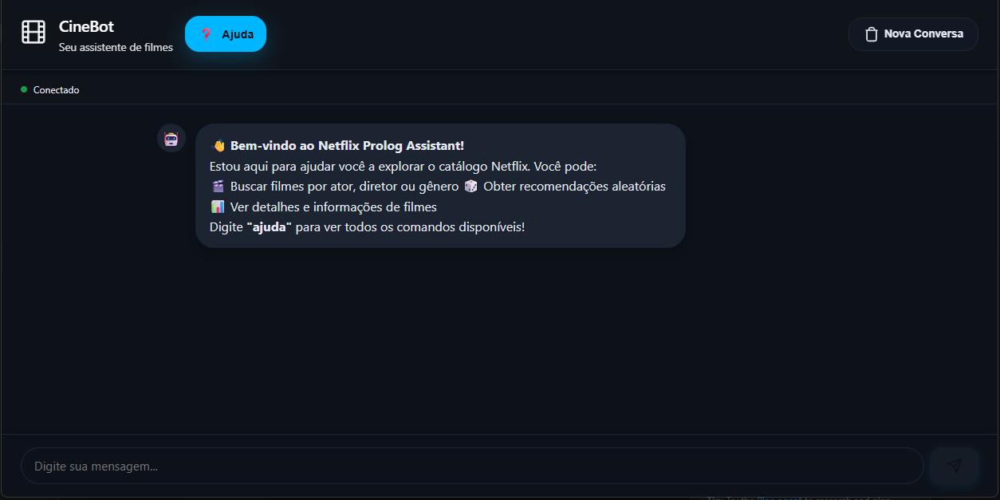

Gerador de Propostas Comerciais
ProduçãoAplicação full stack que preenche modelos DOCX/ODT e gera PDFs comerciais, reduzindo repetição operacional em propostas.
Live preview ↗Disponível para projetos · Paranaguá, PR
Hugo Guimarães da Silva —
Transformo processos manuais em aplicações claras, testáveis e publicadas: interface, regra de negócio, persistência, integração e deploy.
01 Trabalhos selecionados

Aplicação full stack que preenche modelos DOCX/ODT e gera PDFs comerciais, reduzindo repetição operacional em propostas.
Live preview ↗
Marketplace de jogos indie com autenticação JWT, papéis (RBAC), reviews, compras, multi-moeda e frontend React.
Live preview ↗
Chatbot com NLU no backend, inferência em Prolog, sessões em Redis e frontend Angular para consultas sobre filmes.
Live preview ↗02 Sobre
Sou estudante de Análise e Desenvolvimento de Sistemas no Instituto Federal do Paraná, com interesse prático em desenvolvimento web, automação e arquitetura de aplicações.
Minha base mistura programação, análise de sistemas, gerenciamento de projetos e comunicação. Nos projetos, transformo requisitos em fluxos utilizáveis, APIs previsíveis e interfaces objetivas — sempre até o deploy.
03 Stack
04 Trajetória
Instituto Federal do Paraná — Paranaguá, PR
Gerador de Propostas, IndieGameStore API e Chatbot Netflix-Prolog em produção, com deploy próprio.
Alberto Gomes Veiga — Paranaguá, PR
05 Contato
Respondo rápido — escolha o canal que preferir.